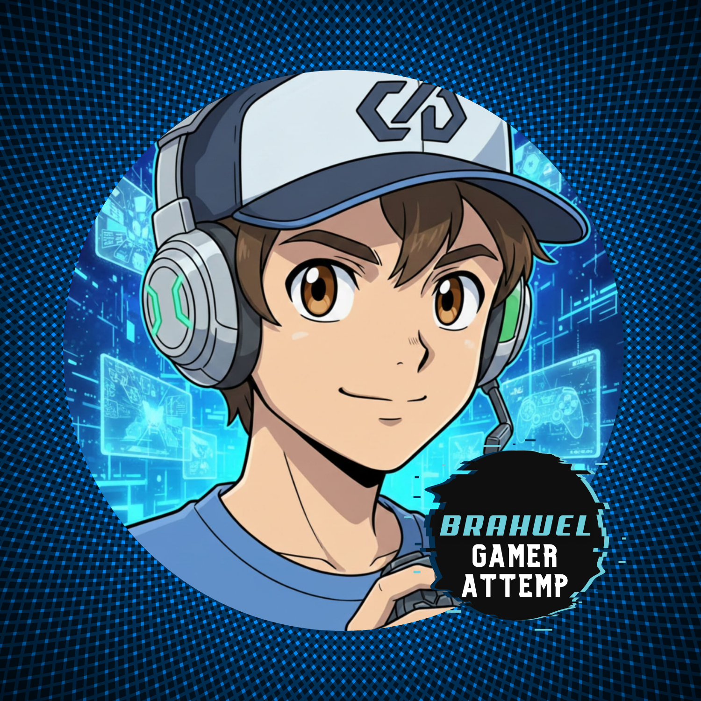

Verónica
Bioquímica y desarrolladora. Enfocada en soluciones para entornos industriales y de laboratorio.
Ver PerfilSomos DeveloPET Friendly, un equipo apasionado por el código, los datos, la automatización y, por supuesto, nuestras mascotas. Buscamos fusionar el aprendizaje IT con nuestras experiencias para crear soluciones reales.
Bioquímica y desarrolladora. Enfocada en soluciones para entornos industriales y de laboratorio.
Ver PerfilAdministración en salud y tecnología, centrada en simplificar la unión entre esos mundos. Mamá del perrito Nilo.
Ver Perfil
Apasionado de los datos, el gaming y el streaming. Creador de dashboards dinámicos.
Ver Perfil
Desarrollador Full Stack & IA. Amante de la automatización y la acuariofilia.
Ver Perfil